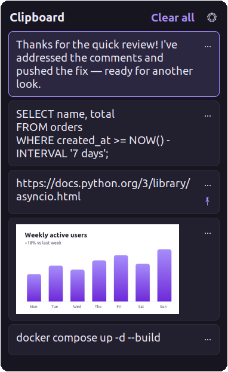
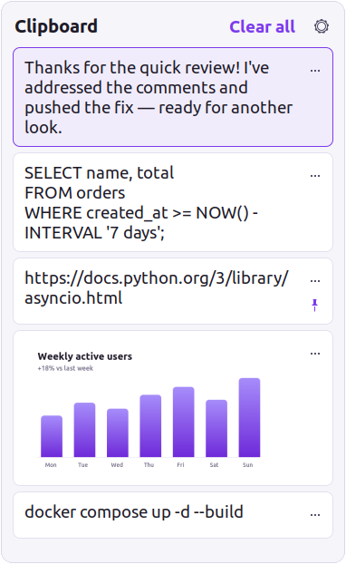
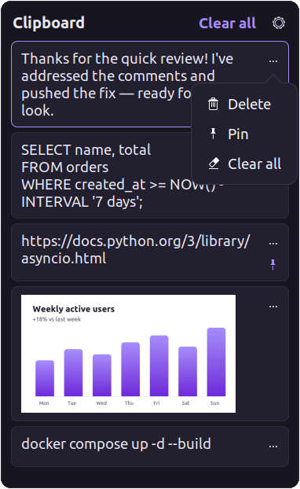

Looking for the Windows clipboard on Linux? SuperV is a free Win+V alternative for Ubuntu, Linux Mint, Debian, Fedora, Arch and more. Press Super+V to see the last 25 things you copied, then click one to paste it. It's free, open source and tiny: under 100 KB, about 7 MB of memory.
Version 1.2.3 · Ubuntu · Mint · Debian · Fedora · Arch · openSUSE · Wayland & X11 · MIT license


<100 KBsingle C program
~7 MBprivate memory
0%CPU while idle
25items, like Windows
Features
Everything Win+V does on Windows, on Linux
If you've used clipboard history on Windows 10 or 11, you already know how to use SuperV. It keeps the same habits and adds a few extras.
Text and image history
Keeps your last 25 copies, newest first, including screenshots and copied images.
Click to paste
Pick an item and it's pasted into the document, browser or terminal you were using.
Pin what matters
Pinned items survive reboots and Clear all. Everything else clears on restart, as on Windows.
Any shortcut you like
Super+V by default. Open ⚙ → Shortcut and press any combo; conflicting shortcuts are moved out of the way for you.
System, light or dark
Follows your desktop theme, or pick light or dark yourself. Make the text bigger or smaller with A− / A+.
Move and resize
Drag the header to put the panel anywhere and drag an edge to resize it. SuperV remembers both.
Private by default
Nothing leaves your computer. Passwords copied from password managers are never recorded.
Feather-light
Plain C on the GTK your desktop already runs. No Electron, no runtime, no polling.
Wayland and X11
GNOME, Cinnamon, MATE and Xfce, on Wayland and X11. KDE Plasma support is experimental.
Keyboard shortcuts
Your Windows habits carry over
Every key does what you expect from Win+V.
Super + V
Open / close clipboard history
↑↓
Move between items
Enter or click
Paste into your app
Delete
Remove the item
Esc
Close the panel
Super + Shift + S
Screenshot → history

Side by side
Windows clipboard history vs SuperV
Everything Windows clipboard history does, feature for feature, plus a few things it can't.
Feature comparison between Windows clipboard history (Win+V) and SuperV for Linux
Feature
Windows
SuperV
History panel on Win/Super + V
✓
✓
Text and images
✓
✓
Pick an item to paste it into your app
✓
✓
Pin items; pinned survive restarts
✓
✓
History clears on restart (except pinned)
✓
✓
⋯ menu: Delete, Pin, Clear all
✓
✓
Turn history off / on
✓
✓
Clipboard survives closing the source app
✓
✓
Ignores password-manager copies
✓
✓
Choose your own shortcut
✗
✓
Adjustable text size in the panel
✗
✓
Free and open source
✗
✓
Install
How to install SuperV on Linux
Pick your Linux family. Every package is a few dozen KB and sets up click-to-paste for you. After installing, open SuperV once from your app menu: that sets up Super+V, and SuperV starts by itself at every login from then on.
Recommended · gets updates
Ubuntu and Linux Mint (PPA)
Add the SuperV PPA and install. Works on Ubuntu 22.04 and 24.04, Mint 21 and 22.
Open SuperV once from your app menu.
New versions arrive with your normal system updates (Software Updater, Update Manager).
Build and install with the included PKGBUILD, or download the ready-built package and run sudo pacman -U superv-x86_64.pkg.tar.zst.
Open SuperV once from your app menu.
$ git clone https://github.com/saikatnjm/superv.git
$ cd superv/packaging/arch
$ makepkg -si
Any other Linux
Install from source
The installer sets everything up in your home folder and fetches build tools with apt, dnf, pacman or zypper.
Optional: pass your own shortcut with --hotkey.
$ git clone https://github.com/saikatnjm/superv.git
$ cd superv
$ ./install.sh
# or with your own shortcut:$ ./install.sh --hotkey "<Ctrl><Alt>v"
Updating: with the PPA, updates come with your normal system updates. Otherwise, install the new package. SuperV notices it was updated and restarts itself into the new version as soon as the panel is closed, keeping what's on your clipboard.
FAQ
Frequently asked questions
Something not working? Run superv --doctor to check the setup on your machine.
How do I get clipboard history like Win+V on Ubuntu?
Install SuperV by double-clicking its .deb file, then open it once: press Super, type SuperV and press Enter.
From then on, press Super+V: a panel opens with your last 25 copied items. Click one to paste it into the app you're using.
Is there a Win+V clipboard for Linux Mint?
Yes. SuperV works on Linux Mint 21 and newer: Cinnamon, MATE and Xfce.
After installing, open the Menu, search for SuperV and open it once. That sets up Super+V for you.
Does SuperV work on Fedora, Arch or KDE Plasma?
Yes:
Fedora and openSUSE: install the .rpm package.
Arch, Manjaro and EndeavourOS: use the included PKGBUILD.
Any other distro: run install.sh.
GNOME, Cinnamon, MATE and Xfce are fully supported. KDE Plasma support is experimental: SuperV sets Meta+V and turns off KDE's own Meta+V clipboard popup for you. On Sway, Hyprland, i3 and COSMIC, add the shortcut line SuperV prints.
Does SuperV work on Wayland?
Yes. Ubuntu's and Fedora's default GNOME Wayland sessions are fully supported, including copying from and pasting into native Wayland apps.
Can I use a different shortcut than Super+V?
Yes. Open the panel, click ⚙ → Shortcut and press a combination with Super or Ctrl+Alt, such as Ctrl+Alt+V.
A green ✓ confirms it's saved. If a combination can't be used, like Ctrl+V which apps need for pasting, SuperV tells you why.
How much memory does SuperV use?
About 7 MB. SuperV is a single C program under 100 KB, and it uses no CPU until the clipboard changes.
Where is my clipboard history stored?
Only on your computer, in ~/.local/share/superv/, readable by you alone.
SuperV never connects to the internet: no telemetry, no analytics, no update checks. Unpinned items are removed on reboot, and passwords copied from password managers are never saved.
How do I update SuperV?
If you installed from the PPA (ppa:saikatnjm/superv), updates arrive with your normal system updates. Otherwise, install the new package the same way you installed the first one. SuperV notices it was updated and restarts itself into the new version as soon as the panel is closed, keeping what's on your clipboard.
Your desktop's shortcuts are restored. Your history and settings are kept in case you reinstall; to delete them too, run rm -r ~/.local/share/superv ~/.config/superv.
Like SuperV?
If it saves you a few seconds every day, a ⭐ on GitHub helps other Linux users find it.